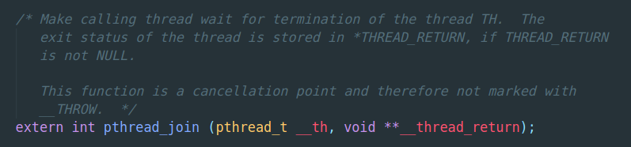

Pthread多线程 创建,挂起,恢复,结束
Contents
@[toc]
线程的创建
在linux中, 多线程库为 pthread, 要包含头文件<pthread.h>
从一个最基本的多线程程序开始介绍
|
|
使用命令gcc -o easy_thread easy_thread.c -lpthread编译.
注意要链接pthread库, 因为这个库不是标准的c库.
首先导入一些库, 然后定义了一个child函数. 这个函数是用来执行线程的函数, 所以它的类型是void *. 它的参数是void *arg, 这是线程函数的通用模板.
在main函数中, 定义一个线程变量, 类型为pthread_t, 我查看了下它的源码, 发现它是unsigned long int类型.
可见他只是一个线程的唯一标识符
使用pthread_create函数创建线程. 原型如图所示
可以看到, 他有四个参数.
第一个参数为指向线程标识符的指针, 在程序中我们传递p的地址进去.
第二个参数为线程的属性. 默认传递NULL就可以. 线程的属性有很多, 比如可以设置线程调度的优先级, 比如可以设置线程栈的大小. 可以看看这篇博客
第三个参数是线程要执行的函数指针. 从函数原型上看, 这个函数的类型只能是void *
第四个参数是函数的参数. 从函数原型上看, 参数的类型只能是void *. 但我们知道void *类型是可以转换为其他类型的, 所以在这个函数内部进行类型转换即可. 如果有多个参数需要传递, 就定义一个结构体.
介绍完这个简单的多线程程序的结构, 我们来分析下它的执行结果. 你预期中它的执行结果是什么呢? 先打印main函数里的main thread start ..., 创建多线程之后, 再执行这个线程, 打印--- running child thread ---, 最后回到主线程, 打印main thread end ...吗?
|
|
这是有可能的. 但是是可能性较小的那个可能. 因为主线程并不能保证在主线程执行完之前将新线程执行完, 所以更大可能性的执行结果是
|
|
是的, 在新线程执行完之前, 主线程已经执行完了, 所以我们看不到新线程的执行结果.
可能同学们注意到了, 我注释掉了一行代码
|
|
这个函数的作用就是等待线程p执行完毕.

这个函数有两个参数, 第一个参数为我们需要等待执行完毕的线程th, 第二个参数为这个线程的返回值.
把他取消注释
|
|
这个程序就会先执行完新线程之后, 再继续执行主线程调用pthread_join之后的部分.
那么这其中发生了什么?
这就涉及到主线程的挂起和恢复. 它定义了一个条件: 线程p是否执行完毕. 如果没有执行完毕, 则主线程挂起(也就是进入睡眠), 当新线程执行完之后, 他会给主线程发送一个信号, 从而恢复/唤醒睡眠中的主线程. 主线程继续执行.
线程的挂起和恢复
条件变量实现
然而pthread_join是如何实现的? 这里介绍一种可行的方法, 使用互斥锁和条件变量来实现的.
还是先把程序展示一下
|
|
比较这个程序和上一个程序的差异, 有三个地方不同
- 声明了三个全局变量, 其中两个我们没见过(就是锁和条件变量)
- child函数(新线程)结尾处多了一些操作
- main函数(主线程)结尾处多了一些操作
正是这多出的三个地方, 他们的交互关系, 给我们提供了等待新线程结束后再继续执行主线程这样一个功能.
可以暂时忽略程序中以锁的部分, 即以pthread_mutex开头的几个函数. 暂时只考虑条件变量和它的功能.
要理解条件变量发挥的作用, 就需要理解这两个关键函数
-
pthread_cond_wait(&c, &m) 执行这个函数的线程将会进入睡眠, 也就是被挂起, 且会被加入到条件变量的显式队列中等待被唤醒. 他有两个参数, 第一个参数是条件变量指针, 第二个参数是互斥锁指针. 它的函数原型为 从函数上方的注释可以看到对这个函数的说明: 等待条件变量cond被signaled(被发送信号)或者broadcast. 被signal了会怎么样呢? 这个线程就会从睡眠状态变成就绪状态, 等待被调度, 这就是线程的恢复. 这就要用到第二个函数了.
-
pthread_cond_signal(&c) 执行这个函数将会给指定的条件变量c的队列中的一个线程发送signal 它的函数原型是 可以看到官方的注解说, 唤醒一个等待条件变量的线程. 这个线程就是我们之前使用了pthread_cond_wait函数的主线程了.
有了这两个函数和他们的功能, 要实现我们的目的, 我们还得在他们之间添加一些联系和逻辑.
回到问题开始, 我们是想得到这样的结果: 在新线程执行完之后继续执行主线程.
那么创建新线程之后, 可能有两种情况:
- 执行新线程, 执行完毕, 回到主线程之后继续执行完主线程
- 不执行新线程, 继续执行主线程, 发现新线程没有执行完, 挂起主线程, 执行新线程, 执行完后, 唤醒主线程, 主线程就绪之后被调度, 完成主线程.
我们用了一个全局变量done来连接这一切. done代表新线程完成的情况. 主线程只有检测到done == 0, 即新线程未完成时, 才会挂起. 新线程完成之后, 会将done置为1, 且发送信号给条件变量c上的主线程, 将其唤醒 为了更深刻地理解done的存在的重要性, 我们做个假设: 假设我们没有done变量.
没有done的情况
在主函数里孤独的pthread_cond_wait没有了条件判断, 他走到这一步时一定会执行, 并挂起. 试想, 如果我们创建了新线程之后, 发生了时钟中断, 新线程被调度, 执行完毕, 然后再回到主线程继续执行, 也就是执行到了我们看到的这行代码, 他被挂起, 等待着被发送信号. 然而, 新线程已经执行完毕, 他再也等不到它的信号了, 只能一直睡眠, 直到被清理.
由此可见done的重要性!
只用done等待线程完成
done如此有效, 那么只有done能不能完成我们的任务: 在新线程执行完之后继续执行主线程? 答案是可以的.
什么? 居然是可以的? 是的, 确实是可以的. 那难道我们之前介绍的那么复杂的条件变量, 都是假的吗?
下面我将通过一个例子来展示, 只有done的可行性.
|
|
从这个简单的例子可以看到, 主线程通过自旋检查的方式等待新线程的执行. 他确实做到了, 但自旋的过程会消耗大量的CPU计算, 是无价值的. 因此它虽然实现了这个功能, 但性能不佳.
对比起来, 我们可以看到条件变量将线程挂起和恢复的价值. 那就是节省了计算资源.
为什么要用while
在这个小例子里, 对done值的判断似乎只需要判断一次, 用if就好了, 为什么还需要用while呢?
在«操作系统导论»中是这样说的: 虽然从逻辑上来说没有必要使用循环语句, 但这样总是好的(后面我们会加以说明).
的却, 在这个问题里用if是可以的. 但在更加实际, 更加复杂的情况下, 是不可以的.
有一种问题叫做生产者/消费者问题, 或者说叫做有界缓冲区问题
在这个问题下, 用while而不是用if就显得尤其重要. 书中所说的"后面我们会加以说明”, 说的正是这个问题下while和if的矛盾, 以及while为什么更好. 本文不做进一步介绍.
为什么要用互斥锁
在之前我们跳过了对互斥锁的分析, 没有锁似乎也运行正常. 然而真的正常吗? 先重新回顾一下这个程序
|
|
加锁的地方有两个, 分别是pthread_cond_wait和pthread_cond_signal函数的前后.
锁的意义在于保护, 在临界区加锁, 这样其他线程在执行临界区, 检测到锁被锁住了, 就不能访问执行这段临界区了, 直到锁被释放. 一个最简单的并发问题是如果创建2个线程同时大量操作同一个数自增(比如自增10000000次, 7个0), 那么执行完之后, 这个数往往并没有自增20000000次, 而是更少. 这就是因为在这段临界区中, 由于线程调度的存在, 且自增操作不是原子操作, 而导致某些时刻两个线程"同时"自增而这个数只增加了1. 而在临界区加锁就可以很好地避免这个问题, 执行临界区代码也就是自增时, 它被看作是原子的, 因而每执行一次就增一次. 当然, 加锁保证了正确性, 但会影响性能(甚至比一个线程自增20000000还要慢). 这是因为在加了锁的临界区, 另一个线程运行到这里而检测到这个临界区被锁住, 他就会退出, 继续进入就绪状态等待被调度. 在这种高并发的前提下, 这样的冲突是会大量存在的, 而线程的上下文切换会消耗大量的时间, 因而反而比只有一个线程运行要更慢了.
好了, 说了这么多关于锁的题外话, 回到当前的问题. 锁在这个条件变量这里起到了什么做用?
我们反向地思考. 思考如果没有锁, 会有哪些特殊情况发生:
假设线程执行到了while (done == 0) , 此时新线程没有执行, 因而条件判断为真. 接下来应该执行pthread_cond_wait(&c, &m);. 然而, 此时发生时钟中断, 内核调度程序, 新线程抢占执行, 并且执行完了, done 变成1了, 而且还给条件变量发送了signal了.
然后回到主线程主线程继续执行pthread_cond_wait(&c, &m);, 然后凉了. 因为主线程会挂起, 等待信号被发送给条件变量从而将它唤醒. 但是, 新线程已经执行完了, 它无法被唤醒了.
这之中的主要矛盾就是, while (done == 0)和pthread_cond_wait(&c, &m);被分开了. 他们本来应该是在一起的. pthread_cond_wait(&c, &m);是在done == 0为真的条件下执行的, 但当新线程执行完毕, done == 0不为真了, 他就不应该执行了.
所以这里是临界区, 它缺把锁. 将while (done == 0) { pthread_cond_wait(&c, &m); } 锁住了, 在执行pthread_cond_wait(&c, &m); 之前CPU去执行新线程了, 但他检测到锁m被锁住了, 就放弃执行, 从而不会提前发送signal.
所以, 在并发情况下, 互斥锁在这里尤其重要.
线程结束
一个线程的结束, 有两种方式, 一种是正常执行完毕, 函数return之后线程结束.
第二种是调用pthread_exit函数, 它的原型为
简单来说我们可以在线程中使用这样的方法pthread_exit(NULL);去终止线程.
下面是一个小demo
|
|
do I print? 这句话是不会打印出来的, 因为在此之前, 这个线程已经提前终止了.
参考资料:
Author 姬小野
LastMod 2019-10-15